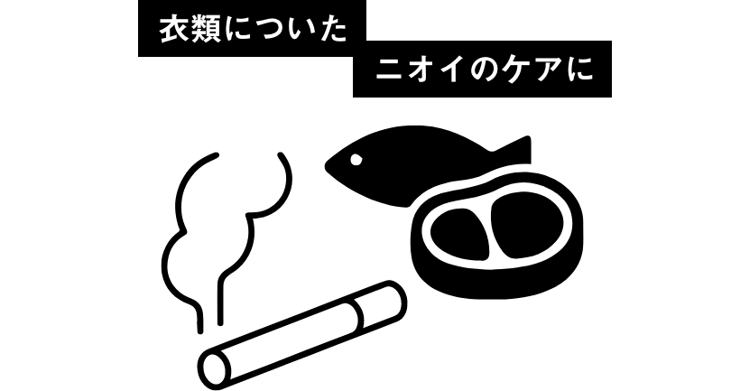

菌、ウイルス、花粉、ダニについては、除菌プラスコースの各モードを用いた試験結果より※1 スポーツウェアやレザーのケアは、LG ThinQのSmart Download
Cycleアプリを使用し、専用のコースをダウンロードすることで可能。
Wi-Fi機能搭載で、スマートフォン*アプリからリフレッシュする衣類に合わせて専用コースを追加でダウンロード。さらに、外出先からでもLG
stylerをスタートし、仕上がり時間を確認できるので、着たい衣類を仕上がり時間に合わせてかんたんに準備。
*接続にはWi-Fi環境が必要です
*ThinQのダウンロードが必要です
*Wi-Fi機能はiOS 9.0以上、Android OS 4.1以上のスマートフォン端末でご利用できます
*ThinQのダウンロードが必要です
*Wi-Fi機能はiOS 9.0以上、Android OS 4.1以上のスマートフォン端末でご利用できます